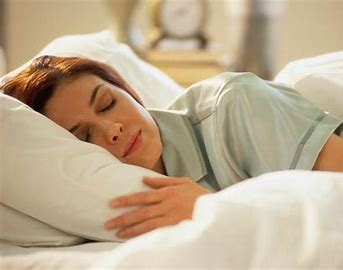

Sometimes, the pace of modern life barely gives you time to stop and rest. It can make getting a good
night’s sleep on a regular basis seem like a dream.
But sleep is as important for good health as diet and exercise. Good sleep improves your brain performance,
mood, and health.
Not getting enough quality sleep regularly raises the risk of many diseases and disorders. These range from
heart disease and stroke to obesity and dementia.
There’s more to good sleep than just the hours spent in bed, says Dr. Marishka Brown, a sleep expert at NIH.
“Healthy sleep encompasses three major things,” she explains. “One is how much sleep you get. Another is
sleep quality—that you get uninterrupted and refreshing sleep. The last is a consistent sleep schedule.”
People who work the night shift or irregular schedules may find getting quality sleep extra challenging. And
times of great stress—like the current pandemic—can disrupt our normal sleep routines. But there are many
things you can do to improve your sleep.
Sleep for repair
Why do we need to sleep? People often think that sleep is just “down time,” when a tired brain gets to
rest, says Dr. Maiken Nedergaard, who studies sleep at the University of Rochester.
“But that’s wrong,” she says. While you sleep, your brain is working. For example, sleep helps prepare your
brain to learn, remember, and create.
Nedergaard and her colleagues discovered that the brain has a drainage system that removes toxins during
sleep.
“When we sleep, the brain totally changes function,” she explains. “It becomes almost like a kidney,
removing waste from the system.”
Her team found in mice that the drainage system removes some of the proteins linked with Alzheimer’s
disease. These toxins were removed twice as fast from the brain during sleep.
Everything from blood vessels to the immune system uses sleep as a time for repair, says Dr. Kenneth Wright,
Jr., a sleep researcher at the University of Colorado.
“There are certain repair processes that occur in the body mostly, or most effectively, during sleep,” he
explains. “If you don’t get enough sleep, those processes are going to be disturbed.”
Sleep myths and thruths
How much sleep you need changes with age. Experts recommend school-age children get at least nine
hours a night and teens get between eight and 10. Most adults need at least seven hours or more of sleep
each night. There are many misunderstandings about sleep.
One is that adults need less sleep as they get older. This isn’t true. Older adults still need the same
amount. But sleep quality can get worse as you age. Older adults are also more likely to take medications
that interfere with sleep.
Another sleep myth is that you can “catch up” on your days off. Researchers are finding that this largely
isn’t the case.
“If you have one bad night’s sleep and take a nap, or sleep longer the next night, that can benefit you,”
says Wright. “But if you have a week’s worth of getting too little sleep, the weekend isn’t sufficient for
you to catch up. That’s not a healthy behavior.”
In a recent study, Wright and his team looked at people with consistently deficient sleep. They compared
them to sleep-deprived people who got to sleep in on the weekend.
Both groups of people gained weight with lack of sleep. Their bodies’ ability to control blood sugar levels
also got worse. The weekend catch-up sleep didn’t help.
On the flip side, more sleep isn’t always better, says Brown. For adults, “if you’re sleeping more than nine
hours a night and you still don’t feel refreshed, there may be some underlying medical issue,” she
explains.
Sleep disorders
Some people have conditions that prevent them from getting enough quality sleep, no matter how hard
they try. These problems are called sleep disorders.
The most common sleep disorder is insomnia. “Insomnia is when you have repeated difficulty getting to sleep
and/or staying asleep,” says Brown. This happens despite having the time to sleep and a proper sleep
environment. It can make you feel tired or unrested during the day.
Insomnia can be short-term, where people struggle to sleep for a few weeks or months. “Quite a few more
people have been experiencing this during the pandemic,” Brown says. Long-term insomnia lasts for three
months or longer.
Sleep apnea is another common sleep disorder. In sleep apnea, the upper airway becomes blocked during sleep.
This reduces or stops airflow, which wakes people up during the night. The condition can be dangerous. If
untreated, it may lead to other health problems.
If you regularly have problems sleeping, talk with your health care provider. They may have you keep a sleep
diary to track your sleep for several weeks. They can also run tests, including sleep studies. These look
for sleep disorders.
Getting better sleep
If you’re having trouble sleeping, hearing how important it is may be frustrating. But simple
things can improve your odds of a good night’s sleep. See the Wise Choices box for tips to sleep better
every day.
Treatments are available for many common sleep disorders. Cognitive behavioral therapy can help many people
with insomnia get better sleep. Medications can also help some people.
Many people with sleep apnea benefit from using a device called a CPAP machine. These machines keep the
airway open so that you can breathe. Other treatments can include special mouthguards and lifestyle changes.
For everyone, “as best you can, try to make sleep a priority,” Brown says. “Sleep is not a throwaway
thing—it’s a biological necessity.”